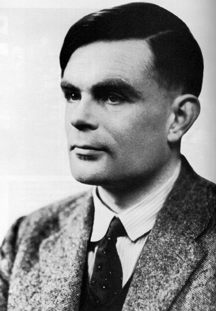

| Alan Turing | ||
 1912(b)-1954(d). English mathematician, logician and philosopher who made important advancements in the field of computer theory and who contributed important logical analyses of computer processes. During WWII, Turing served in the cryptanalytic headquarters at the Government Code and Cypher School at Bletchley Park, Buckinghamshire, where he was largely responsible for breaking the German Enigma military codes. In 1936, he introduced the Universal Turing Machine, a hypothetical machine used for computability theory proofs. The Universal Turing Machine is regarded as the first digital computer. In an unfortunate end to his prolific career, Turing was arrested in 1952 after British authorities found out he was having a relationship with another man. Under British law, homosexuality was a crime, and it resulted in Turing losing his security clearance to continue his work at Bletchley Park. Rather than face a life in prison, Turing accepted treatment of regular estrogen injections, which were believed to neutralize libido. In 1954, Turing committed suicide by eating a cyanide-laced apple. |
||
©2006. I.T Encyclopedic Dictionary. Program designed and created by: Arjay C. Nacion |
||
Created exclusively for Mabini Colleges. |
||